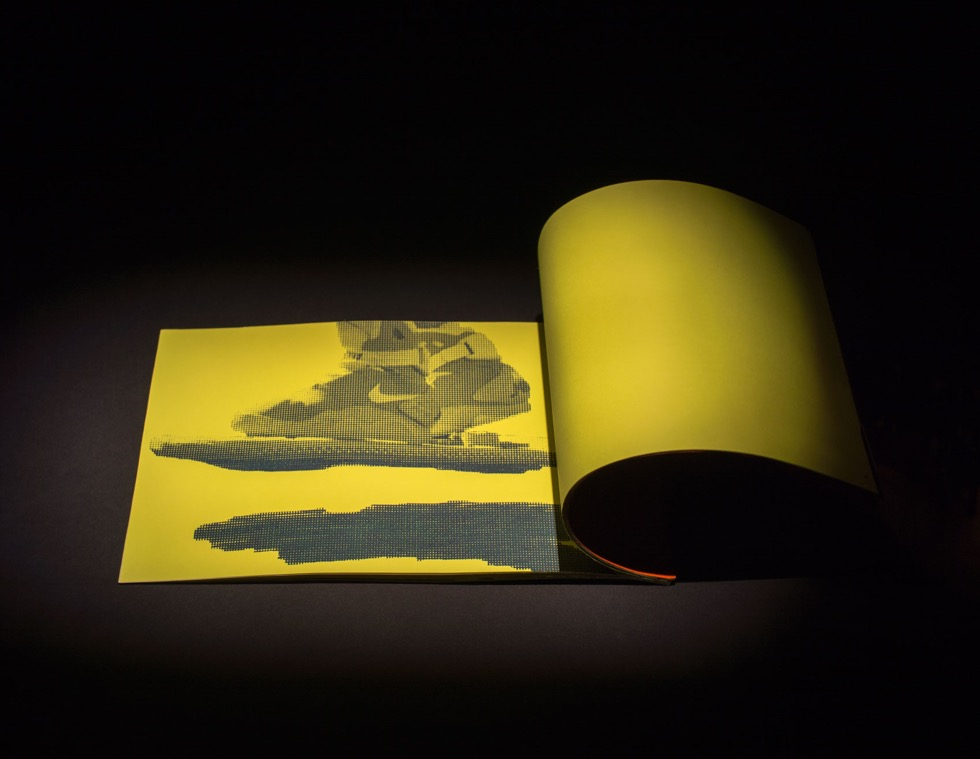
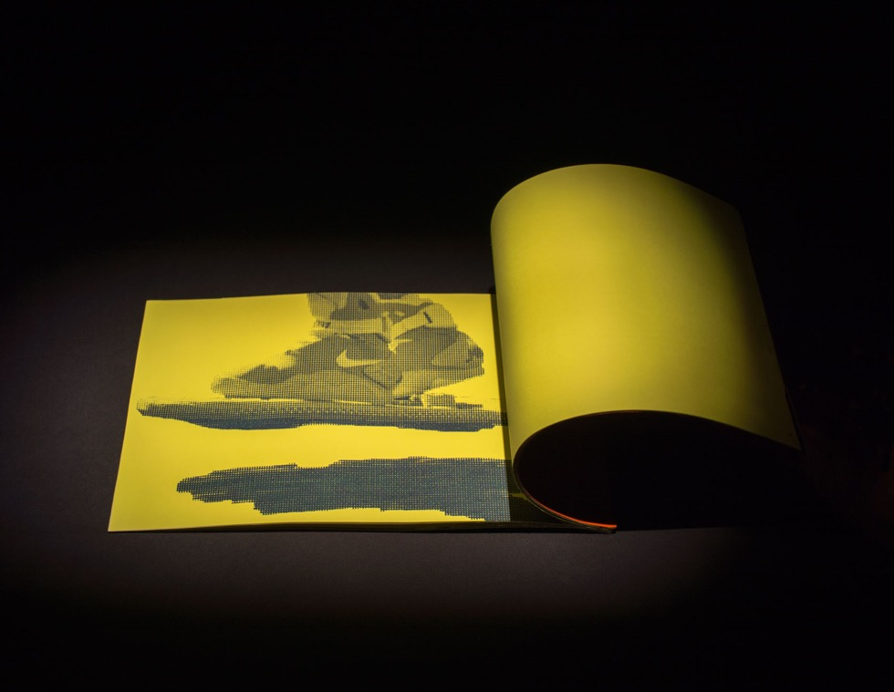

The Book by El Lissitzky in relationship to Nike Sneakers. Both Lissitzky and Nike pushed their fields into a new realm. With his Proun series, Lissitzky created a new art through the use of space and architectural form. Nike continues to push sneakers into new worlds, from something only professional athletes wear, to something commonly worn by all, to an art object, to a collectible item.


 
